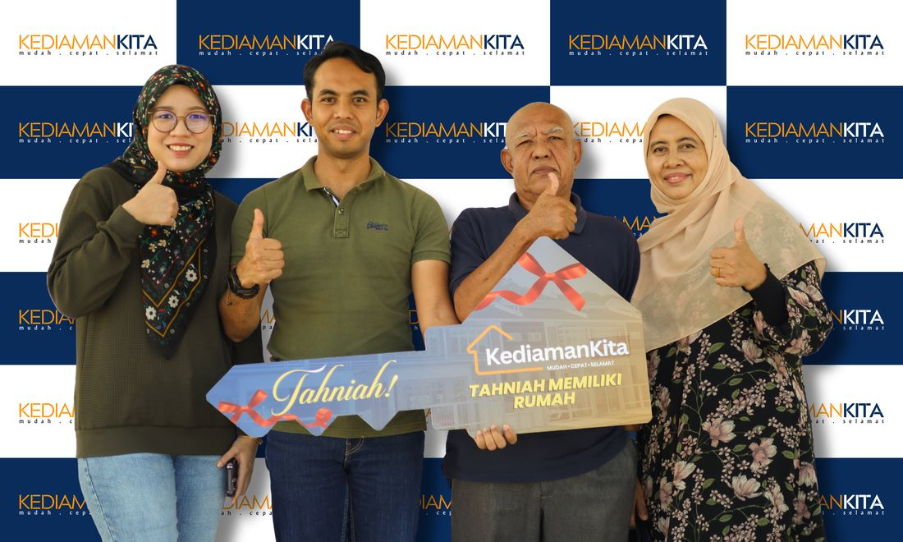
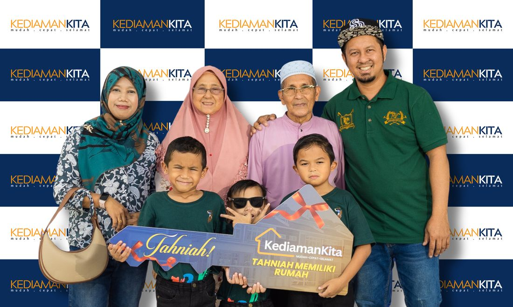
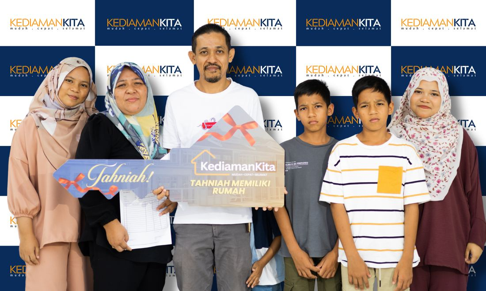
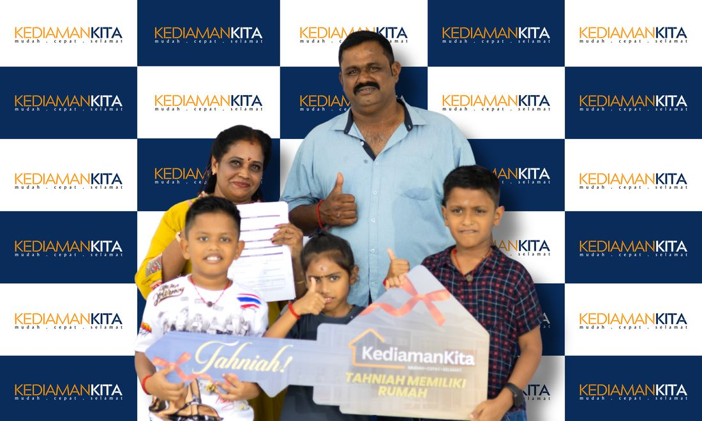
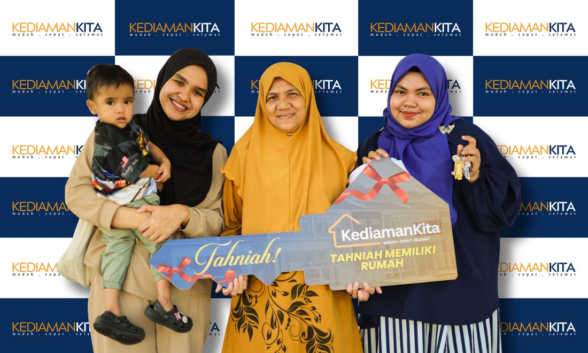
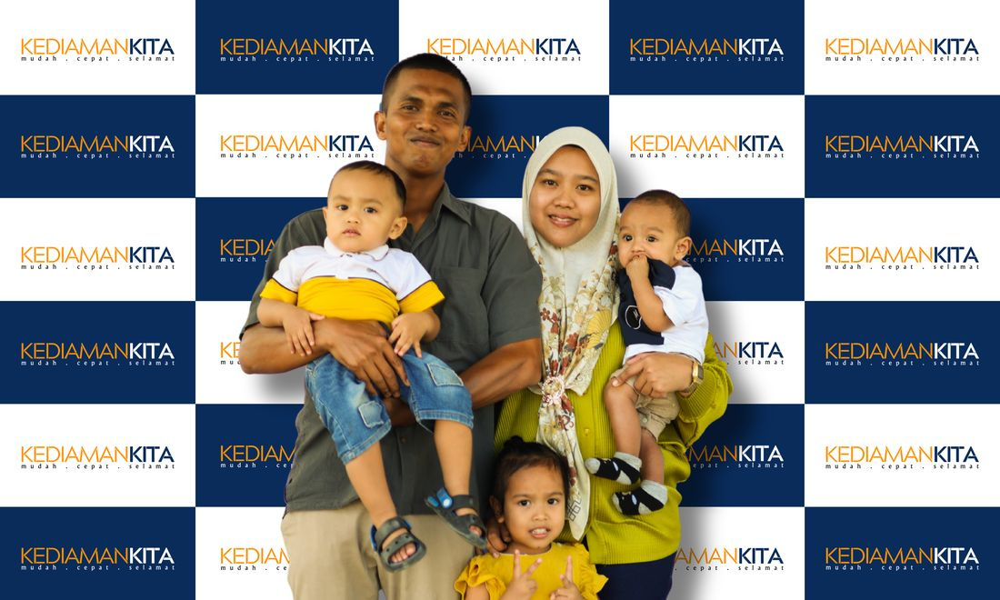
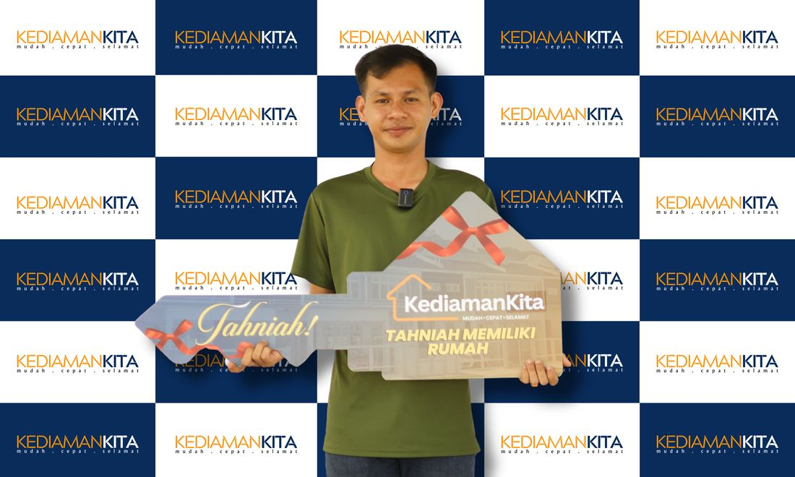
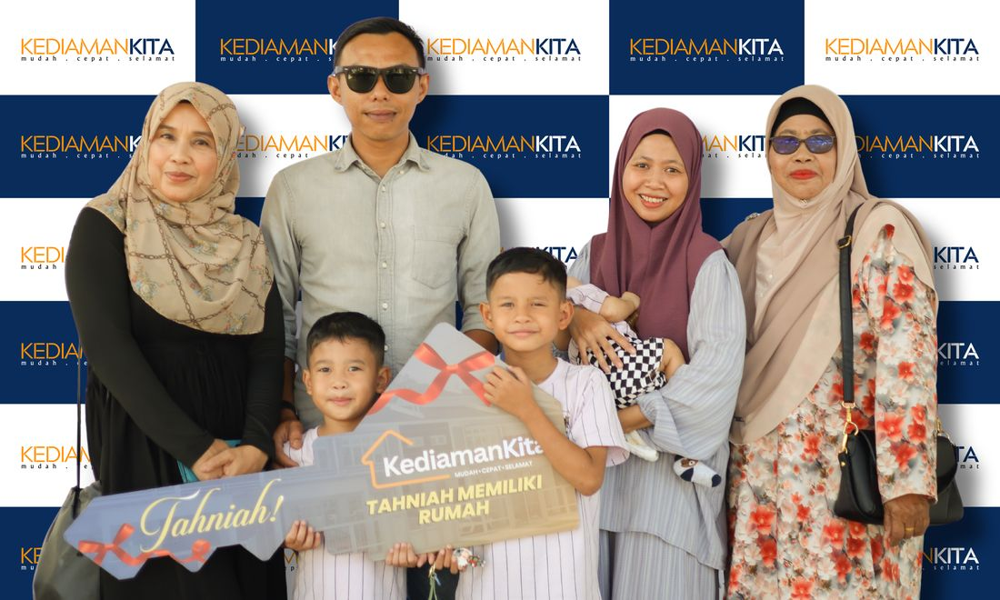
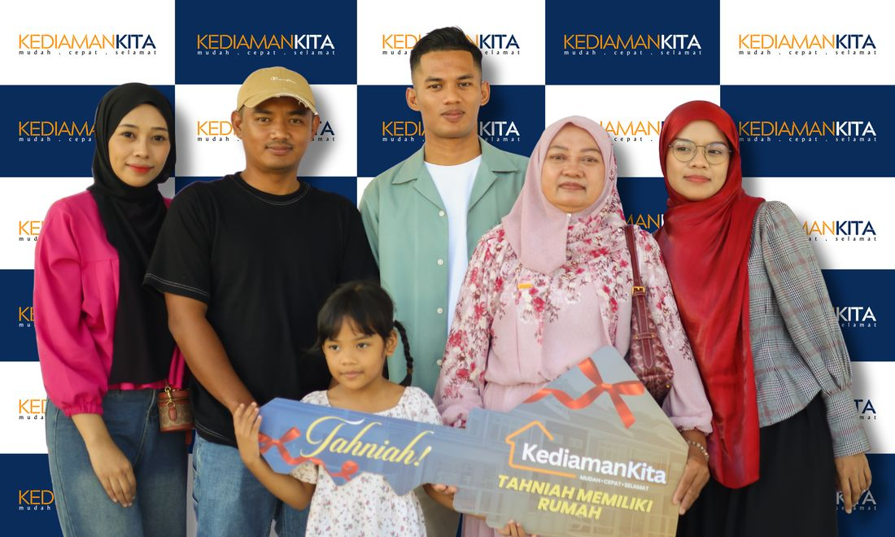
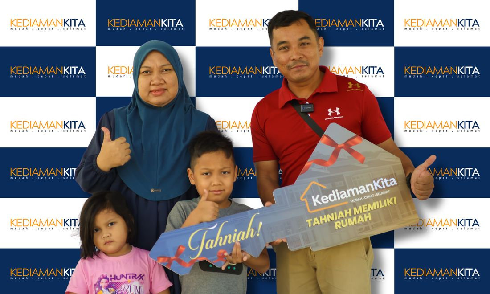

Kami bukan sekadar membina dinding atau menjual unit rumah. Kami menyediakan perancangan ekosistem perumahan yang lengkap untuk penjawat awam dan pembeli rumah pertama di Malaysia.
Menguji had kemampuan sebenar anda bagi memastikan pinjaman bank atau LPPSA mendapat kelulusan maksimum.
Pelbagai rekaan pelan rumah yang praktikal, dioptimumkan untuk meminimumkan pembaziran kos bahan.
Daripada kelulusan jurutera, arkitek, majlis perbandaran (PBT) sehingga permohonan pinjaman LPPSA / Bank, kami uruskan sepenuhnya.
Gunakan kalkulator pintar kami atau hubungi perunding untuk menguji nisbah DSR secara telus.
Keliru dengan birokrasi, kelulusan pelan majlis perbandaran, hak milik tanah, pematuhan LPPSA, atau keperluan bank.
Bimbang kos tambahan mendadak seperti penyediaan tapak, fi guaman, cukai, reka bentuk dalaman, atau bahan binaan melambung.
Nisbah hutang sedia ada terlalu ketat. Slip gaji padat dengan potongan koperasi dan pinjaman peribadi sehingga permohonan ditolak.
Setiap serahan kunci adalah bukti komitmen kami membantu keluarga Malaysia memiliki rumah idaman.










Pasukan perunding kami sedia membantu anda setiap langkah.